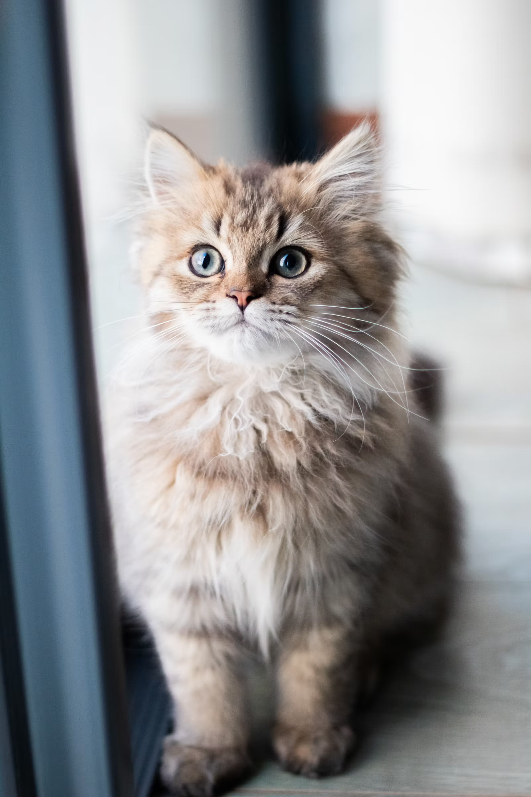
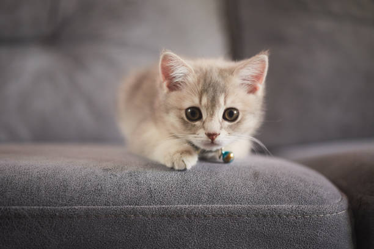
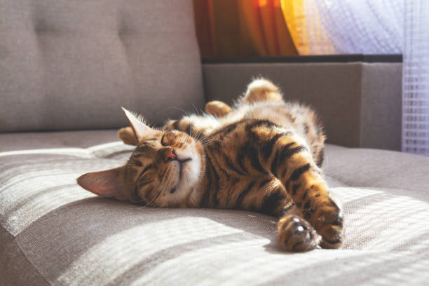
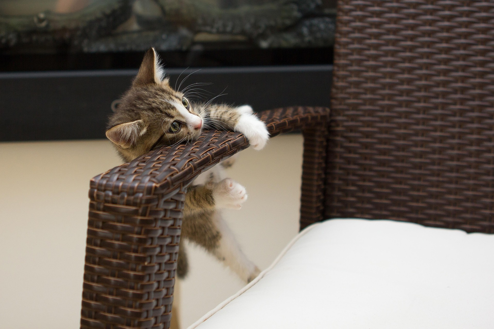
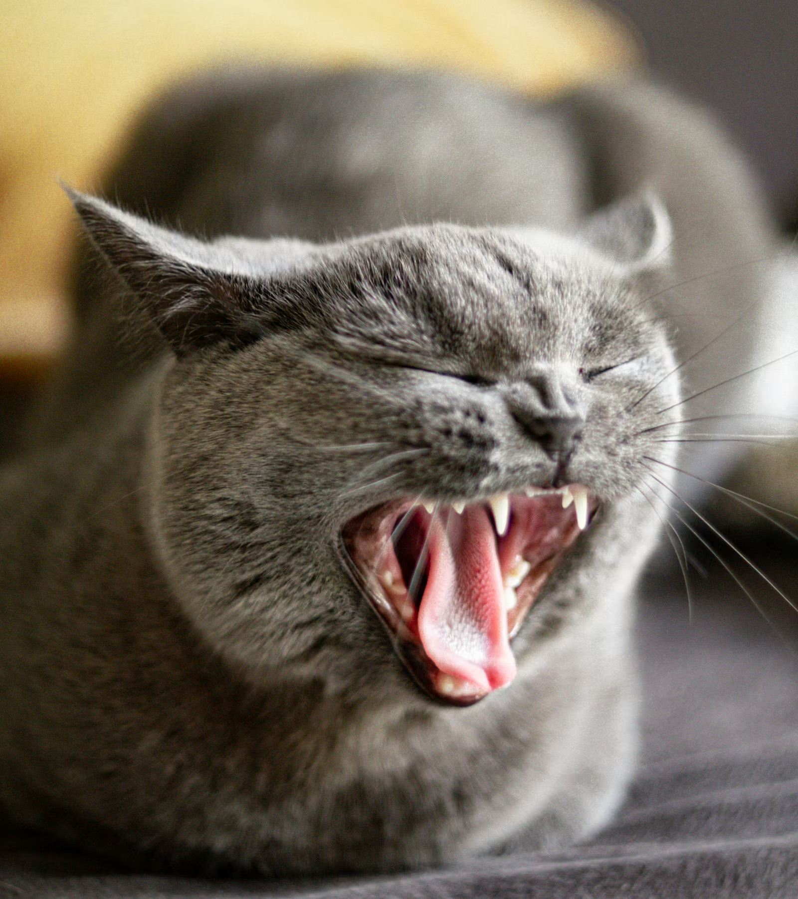
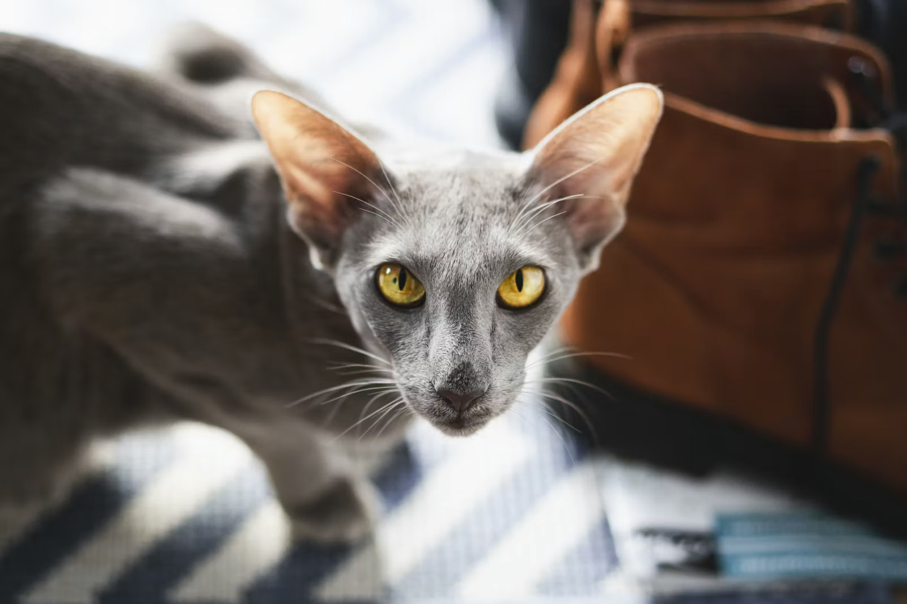
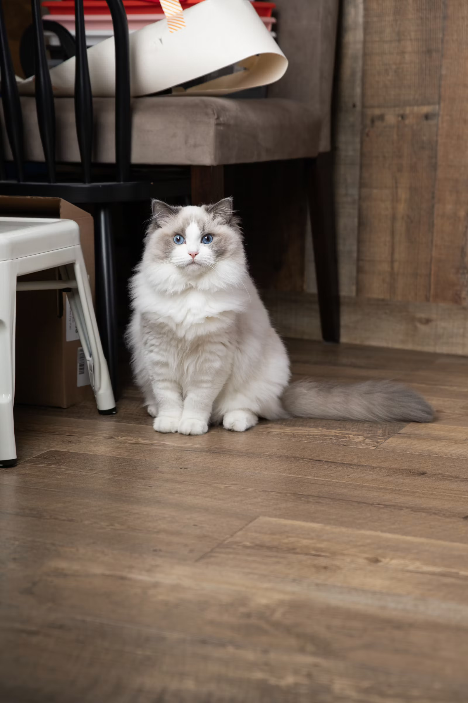

Our cats
We have several different cats, from kittens to elderly cats. Here you can get to know them before visiting our café!
Interested in adopting? Click here! →

Tuon
- Age: 5 years
- Breed: Siberian cat
- Personality: Tuon is a playful female cat who loves treats. She is the opposite of shy and loves attention!

Mr. K
- Age: 8 months
- Breed: British Shorthair
- Personality: Mr. K is an adorable male kitten who is extremely smart and funny. He loves cuddles and playing with toys.
Simba

- Age: 3 years
- Breed: Bengal cat
- Personality: Simba is a male cat who was rescued in Portugal. He is a bit shy at first, but once he gets to know you, he loves being petted. Simba spends most of his day sleeping.
Toffee

- Age: 7 years
- Breed: Scottish Fold
- Personality: Toffee is a big sleepyhead. He loves all kinds of food and likes to take care of everyone. You can win his heart by feeding him, but watch out, because he will snatch your food if he gets the chance.

Java
- Age: 3 months
- Breed: Domestic Medium Hair
- Personality: Java is a rescued kitten with a huge personality. He is extremely smart and good at fooling people, so don't be fooled by his cute looks! Other than that, he is a kind and sweet cat.

Kevin
- Age: 4 years
- Breed: British Shorthair
- Personality: Kevin is a calm and dignified cat who pretends he doesn't care about anyone. Don't be fooled, because once you stop paying attention to him, he will climb straight into your lap. He also has very strong opinions about dinner time.

Yoda
- Age: 9 years
- Breed: Oriental Shorthair
- Personality: Yoda is the wise old cat of the café. He likes to watch everyone from the high shelf and only comes down when he decides you are worth his time. If he gives you a slow blink, you have been approved.

Purrito
- Age: 1 year
- Breed: Ragdoll mix
- Personality: Purrito is a playful ball of energy who loves everyone. He is usually the first one to greet you at the door and will flop over for belly rubs. He also loves to hide in blankets until only his tail is sticking out.